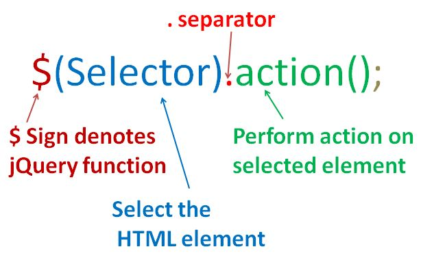
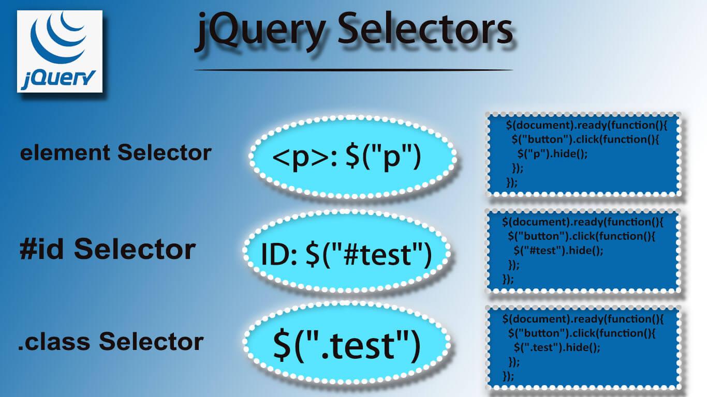

Tu primer script jQuery. Cómo instalar jQuery en la página web y los pasos para realizar un primer ejemplo, con explicaciones básicas y detalladas sobre la los fundamentos de uso de la librería.
Ejemplos en cada capítulo
Podras leer y probar los ejemplos para facilitar el aprendizaje de jQuery como el siguiente ejemplo, da clic a cada una de las frasese:
Dame un clic para desaparecer.
A mi tambien!
Tambien a mi!
INTRODUCCIÓN A JQUERY
ANTES DE COMENZAR
Antes de adentrarnos en el estudio de jQuery, es fundamental reconocer la importancia de poseer habilidades y conocimientos previos en áreas fundamentales como HTML, CSS y JavaScript. Estos conocimientos proporcionarán una base sólida para comprender y aprovechar al máximo las capacidades de jQuery.
¿QUÉ ES JQUERY?
jQuery corresponde a una biblioteca de JavaScript "liviana" y de código abierto que se utiliza para simplificar y agilizar el desarrollo de aplicaciones web. Su lema característico es "escribe menos, haz más".
Su principal objetivo es el permitir a los desarrolladores lograr resultados eficientes y rápidos con menos líneas de código, es decir que, tiene el propósito de hacer mucho más fácil el uso de JavaScript en su sitio web.
Además, JQuery se caracteriza por simplificar tareas comunes en JavaScript mediante métodos que se pueden invocar con una sola línea de código, reduciendo la cantidad de código necesaria.
Entre las características más importantes de la biblioteca JQuery se tienen:
Manipulación de HTML/DOM: jQuery facilita la manipulación de elementos HTML y la navegación en el DOM (Document Object Model). Permite seleccionar, modificar y agregar elementos de forma sencilla.
Manipulación de CSS: Con jQuery, es posible aplicar y modificar estilos CSS de manera dinámica. Esto incluye cambios en propiedades como colores, tamaños, fuentes, posiciones y más.
Métodos de eventos HTML: jQuery simplifica la asignación de eventos a elementos HTML, como clics, desplazamientos, ingresos de teclado, entre otros. Permite una gestión eficiente de la interactividad en las páginas web.
Efectos y animaciones: La biblioteca ofrece una amplia variedad de efectos y animaciones predefinidos, como desvanecimientos, deslizamientos, cambios de tamaño y movimientos. Estos efectos se aplican con facilidad a los elementos de la página.
AJAX: jQuery simplifica el uso de la tecnología AJAX para realizar peticiones asíncronas al servidor y actualizar partes específicas de la página web sin tener que recargarla por completo. Esto mejora la experiencia del usuario al proporcionar una interacción más rápida y dinámica.
Utilidades: jQuery incluye una serie de utilidades prácticas que facilitan tareas comunes, como la manipulación de arrays, la gestión de objetos JSON, el manejo de cookies y mucho más. Estas utilidades agilizan el desarrollo y mejoran la eficiencia del código.
¿POR QUÉ UTILIZAR JQUERY?
jQuery destaca como una de las bibliotecas de JavaScript más populares y versátiles, ofreciendo una amplia gama de funcionalidades. Es ampliamente adoptada por numerosas compañías líderes en la web, algunas de las cuales incluyen:
Google
Microsoft
IBM
Netflix
Estas empresas confían en jQuery para impulsar sus aplicaciones web y ofrecer experiencias interactivas y dinámicas a sus usuarios.
jQuery Get Started
Agregar jQuery a sus páginas web
Hay varias formas de comenzar a usar jQuery en su sitio web:
Descargue la biblioteca jQuery de jQuery.com
Incluya jQuery desde un CDN, como Google
Descargando jQuery
Hay dos versiones de jQuery disponibles para descargar:
Versión de producción:esto es para su sitio web en vivo porque ha sido minimizado
y
comprimido
Versión de desarrollo:esto es para pruebas y desarrollo (código sin comprimir y
legible)
La biblioteca jQuery es un solo archivo JavaScript y se hace referencia a él con la
script etiqueta HTML(observe que la script etiqueta debe estar dentro
de la head sección):
Un CDN (Content Delivery Network o Red de Entrega de Contenido) de jQuery se refiere a una
red distribuida de servidores ubicados en diferentes partes del mundo que almacenan y
entregan los archivos de la biblioteca jQuery a los usuarios de manera eficiente.
Algunos ejemplos populares de CDNs de jQuery incluyen el CDN de Puedes utilizar los enlaces
proporcionados por estos CDNs para
cargar los archivos de jQuery en tu sitio web.
La sintaxis de jQuery sigue una estructura común para seleccionar elementos del DOM (Document
Object Model) y manipularlos. La sintaxis básica es: $( selector ). acción ()
Un signo $ para definir/acceder a jQuery
Un ( selector ) para "consultar (o encontrar)" elementos HTML
Una acción jQuery () que se realizará en los elementos
Syntax
Ejemplos
$(this).hide()- oculta el elemento actual. $("p").hide()- oculta todos los elementos. $(".test").hide()- oculta todos los elementos con class="test". $("#test").hide()- oculta el elemento con id="test".
El evento de Document Ready
El evento "Document Ready" en jQuery se utiliza para ejecutar código cuando el documento
HTML ha sido completamente cargado y parseado. Este evento se dispara cuando todos los
elementos del DOM están disponibles para manipular.
Los métodos de jQuery en nuestros ejemplos están dentro de un evento de documento listo:
$(document).ready(function(){// jQuery methods go here... });
Estos son algunos ejemplos de acciones que pueden fallar si los métodos se ejecutan antes de
que el documento esté completamente cargado:
Intentando ocultar un elemento que aún no se ha creado
Intentando obtener el tamaño de una imagen que aún no está cargada
Ejemplo:
Cambio de tema de color dinámico:
$(document).ready(function() {
var changeColor = true;
var defaultColor = $('body').css('background-color');
function randomColor() {
return '#' + Math.floor(Math.random() * 16777215).toString(16);
}
function changeBackgroundColor() {
if (changeColor) {
var color = randomColor();
$('body').css('background-color', color);
}
}
$('.theme-button').click(function() {
changeBackgroundColor();
});
$('.disable-button').click(function() {
changeColor = false;
});
$('.restore-button').click(function() {
changeColor = true;
$('body').css('background-color', defaultColor);
});
});
Selectores JQuery
Los selectores jQuery son una de las partes más importantes de la biblioteca jQuery.

Como la propia palabra indica, los selectores son un mecanismo disponible en jQuery para seleccionar determinados elementos de la página. El selector no es más que una cadena de caracteres, creada bajo unas normas que veremos a continuación, con la que podemos referirnos a cualquiera o cualesquiera de los elementos (etiquetas) que hay en una página.
Nota
Actualizado: Ahora que existen otras librerías más modernas como React o Vue cabe comentar que no usan selectores porque no están pensadas para acceder a los elementos de la página de manera explicita, para manipular el DOM como hace jQuery. En lugar de ello usan templates reactivos y programación declarativa, que mejora bastante la experiencia del desarrollador.
¿Qué son los selectores?
Los selectores son cadenas de texto que permiten seleccionar elementos en la página. Con un selector podemos acceder a un elemento único o a una colección de elementos determinados. Los selectores en realidad vienen del lenguaje CSS, por lo que para construirlos se usa la misma sintaxis de selectores de CSS.
Los selectores de jQuery le permiten seleccionar y manipular elementos HTML.
Los selectores de jQuery se utilizan para "encontrar" (o seleccionar) elementos HTML en función de su nombre, identificación, clases, tipos, atributos, valores de atributos y mucho más. Se basa en los selectores de CSS existentes y, además, tiene algunos selectores personalizados propios.
Todos los selectores en jQuery comienzan con el signo de dólar y paréntesis: $().
El selector de elementos
El selector de elementos jQuery selecciona elementos en función del nombre del elemento.
Puede seleccionar todos <p> los elementos en una página como se muestra en el siguiente codigo y cuando un usuario hace clic en un botón "Desvanecer Parrafos", todos <p> los elementos se ocultarán:
El selector jQuery usa el atributo id de una etiqueta HTML para encontrar el elemento específico.#id
Una identificación debe ser única dentro de una página, por lo que debe usar el selector #id cuando desee encontrar un elemento único y único.
Para encontrar un elemento con una identificación específica, escriba un carácter hash, seguido de la identificación del elemento HTML:
$("#test")
Cuando el usuario de clic en el boton Ocultar Frases, se ocultaran las frases con el #test1 y #test2:
$(document).ready(function(){
$("#botonselec2").click(function(){
$("#test1, #test2").hide();
});
$("#mostrarselec1").click(function() {
$("#test1, #test2").show();
});
});
<p>Yo soy un párrafo normal 1</p>
<p id="test1">Yo soy un párrafo normal con id</p>
<p>Yo soy un párrafo normal 2</p>
<p id="test2">Yo también tengo id</p>
Yo soy un parrafo normal 1
Yo soy un parrafo normal con id
Yo soy un parrafo normal 2
Yo tambien tengo id
Cuando el usuario de clic en el boton Pintar Frases, se cambia el color de las frases con el #test1 y #test2:
$(document).ready(function() {
$("#botonselec3").on("click", function() {
$("#test1\\.1:even, #test2\\.1:even").css("color", "blue");
});
$("#mostrarselec2").on("click", function() {
$("#test1\\.1:even, #test2\\.1:even").css("color", "");
});
});
<p>Yo soy un párrafo normal 1</p>
<p id="test1.1">Yo soy un párrafo normal con id</p>
<p>Yo soy un párrafo normal 2</p>
<p id="test2.1">Yo también tengo id</p>
Yo soy un parrafo normal 1
Yo soy un parrafo normal con id
Yo soy un parrafo normal 2
Yo tambien tengo id
El selector .class
El selector jQuery .class encuentra elementos con una clase específica.
Para encontrar elementos con una clase específica, escriba un carácter de punto, seguido del nombre de la clase:
$(".test")
Cuando el usuario de clic en el boton Desvanecer Frase, se oculta la frase con el class="test3":
$(document).ready(function(){
$("#botonselec4").click(function(){
$(".test3").hide();
});
$("#mostrarselec3").click(function() {
$(".test3").show();
});
});
<p>Yo soy un parrafo normal que no le va a pasar nada</p>
<p class="test3">Yo soy un parrafo que tiene la clase=".test3"</p>
Yo soy un parrafo normal que no le va a pasar nada
Yo soy un parrafo que tiene la clase=".test3"
Eventos de jQuery
¿QUÉ SON LOS EVENTOS?
Los eventos engloban todas las distintas interacciones de los visitantes que una página web puede responder. Cada evento representa un momento preciso en el que ocurre algo significativo. Algunos ejemplos comunes de eventos son: Movimiento del mouse sobre un elemento, Clic en un elemento específico o Selección de un botón de radio.
El término "incendio" o "desencadenamiento" se utiliza a menudo en relación con los eventos. Por ejemplo, se puede decir que el evento de pulsación de tecla se desencadena en el preciso instante en que una tecla es presionada. Esta terminología resalta el momento en que el evento es activado y se puede tomar una acción correspondiente.
EVENTOS COMUNES DEL DOM.
Eventos del Mouse
Eventos del Teclado
Eventos de Formulario
Eventos del Documento/Ventana
click / clic
keypress
submit / enviar
load / cargar
dblclick / doble clic
keydown
change / cambio
resize / redimensionar
mouseenter / entrar
keyup
focus / enfoque
scroll / desplazamiento
mouseleave / salir
blur / desenfoque
unload / descargar
SINTAXIS DE JQUERY PARA LOS MÉTODOS DE EVENTOS.
En jQuery, la mayoría de los eventos del DOM tienen un método equivalente en jQuery.
Para asignar un evento de clic a todos los párrafos de una página, puedes hacer lo siguiente:
$("p").click();
El siguiente paso es definir qué debe ocurrir cuando se activa el evento. Debes pasar una función al evento:
$("p").click(function(){
// ¡Aquí va la acción!
});
Métodos de Eventos de jQuery comúnmente utilizados.
$(document).ready()
El método $(document).ready() nos permite ejecutar una función cuando el documento se haya cargado completamente.
click()
El método click() adjunta una función controladora de eventos a un elemento HTML, la función se ejecuta cuando el usuario hace clic en el elemento HTML.
EJEMPLO:
CAMBIO DE ESTILO DE BOTONES CON EL MÉTODO "click()".
El método dblclick() adjunta una función controladora de eventos a un elemento HTML.La función se ejecuta cuando el usuario realiza doble clic en el elemento HTML.
EJEMPLO:
CAMBIO DE ESTILO DE BOTONES AL DAR "DOBLE CLIC" CON EL MÉTODO "click()".
El método mouseenter() adjunta una función controladora de eventos a un elemento HTML. La función se ejecuta cuando el puntero del ratón entra en el elemento HTML.
EJEMPLO:
PASAR POR EL PÁRRAFO PARA VER EFECTOS CON EL MÉTODO "mouseenter()".
El método mouseleave() adjunta una función controladora de eventos a un elemento HTML. La función se ejecuta cuando el puntero del ratón abandona el elemento HTML.
EJEMPLO:
PASAR EL MOUSE POR EL PÁRRAFO CON EL MÉTODO "mouseenter()".
El método mousedown() adjunta una función controladora de eventos a un elemento HTML. La función se ejecuta cuando se presiona el botón izquierdo, medio o derecho del ratón mientras el ratón está sobre el elemento HTML.
EJEMPLO:
MANTENER PRESIONADO EL PÁRRAFO CON EL MÉTODO "mousedown()".
El método mouseup() adjunta una función controladora de eventos a un elemento HTML. La función se ejecuta cuando se suelta el botón izquierdo, medio o derecho del ratón mientras el ratón está sobre el elemento HTML.
EJEMPLO:
HACER CLIC Y SOLTAR EL PÁRRAFO CON EL MÉTODO "mouseup()".
El método hover() toma dos funciones y es una combinación de los métodos mouseenter() y mouseleave(). La primera función se ejecuta cuando el ratón entra en el elemento HTML y la segunda función se ejecuta cuando el ratón sale del elemento HTML.
El método focus() adjunta una función controladora de eventos a un campo de formulario HTML. La función se ejecuta cuando el campo de formulario recibe el foco.
EJEMPLO:
HACER CLIC EN LOS "INPUT" CON EL MÉTODO "focus()".
El método blur() adjunta una función controladora de eventos a un campo de formulario HTML. La función se ejecuta cuando el campo de formulario pierde el foco.